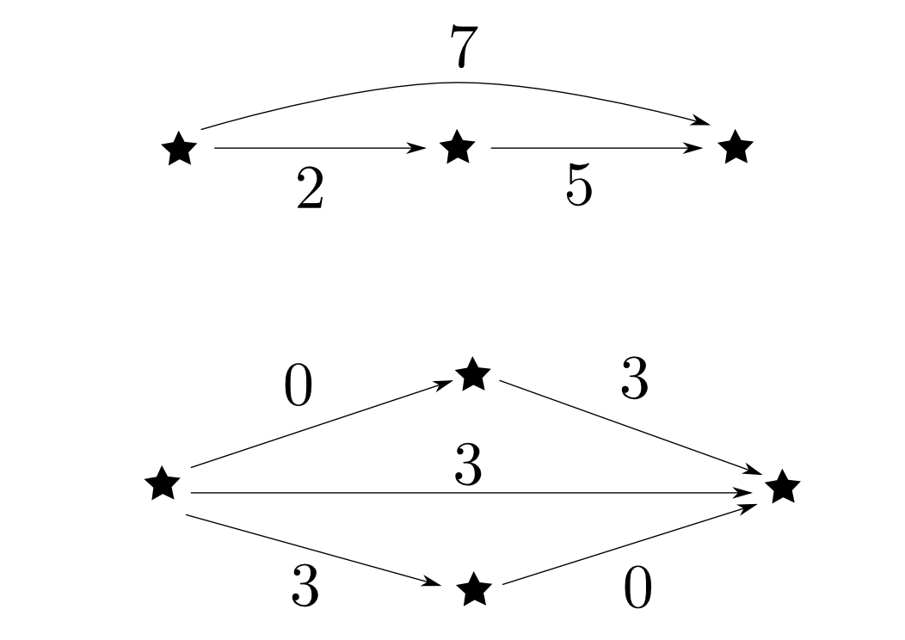

圏論勉強会
第2回
@ワークスアプリケーションズ
中村晃一2013年5月16日
謝辞
この勉強会の企画，会場設備の提供をして頂きました
㈱ ワークスアプリケーションズ様
にこの場をお借りして御礼申し上げます。
この会について
- 圏論(category theory)を題材にいろんなことを学びます。
- 計算機科学関係の話題が多めになると思います。分かり易さを重視して初歩的な例を多用します。
- 毎週1回，全12週くらいの予定です。
- 何らかの関数型言語に触れていた方が今後の授業をより楽しめると思います。資料中ではHaskellを使う事が多いです。
- 他の聴衆の為にもなるので,質問・コメントを歓迎します。
- この資料はhttp://github.com/nineties/category-seminarに置いてあります。
第２回:圏と函手
第2回の内容
- 圏・函手の定義
- 圏・函手の具体例
- 圏の構成方法
などを学びます。
定義の復習
圏の定義
圏(category)とは
- 対象(object):$A,B,C,\cdots$
- 射(arrow,morphism):$f,g,h,\cdots$
- 射の合成(composition): $\circ$
からなり,以後の条件を全て満たすものである。
任意の射$f$には
- 域(domain): $\mathrm{dom}(f)$
- 余域(codomain): $\mathrm{cod}(f)$
という２つの対象が備わる。
$\mathrm{dom}(f) = A$,$\mathrm{cod}(f) = B$である事を $ f: A\rightarrow B$ と表す。

射$f:A\rightarrow B$,$g:B\rightarrow C$が存在するならば,
- 合成射(composite) $ g\circ f: A \rightarrow C $
も存在する。

任意の射$f: A \rightarrow B$, $g: B \rightarrow C$, $h: C \rightarrow D$に対して
結合律(associative law)
が成り立つ。すなわち,下図が可換である。

任意の対象$A$に対して
- 恒等射(identity) $ 1_A: A \rightarrow A $
が存在し,任意の$f: A \rightarrow B$に対して単位元律(identity law)
が成り立つ。すなわち,右下図が可換である。

恒等射の一意性
任意の対象$A$について，その恒等射は一意$1_A$に定まる。($1_A$と書く事ができるのはその為。)
 【一意性の証明】
【一意性の証明】
$1_A,1'_A: A\rightarrow A$が共に恒等射だとする。
恒等射の性質より右図の上半分,下半分はどちらも可換だから
$$ 1_A = 1'_A $$
となる。つまり恒等射は一意に定まる。□
同型の定義
$f: A\rightarrow B$に対して,$g: B\rightarrow A$が存在し,
が成り立つならば$f$を同型射(isomorphism)と呼ぶ。
また,圏$\mathbf{C}$において$A$と$B$の間に同型射が存在するならば,$\mathbf{C}$において$A$は$B$と同型(isomorphic)であると言い,
$$ A \cong B$$
と表す。

逆射
$f: A\rightarrow B$が同型射ならば
となる$g$は一意に定まる。このような$g$を逆射(inverse)と言い$f^{-1}$と表す。
 【一意性の証明】
【一意性の証明】
$g, h: B\rightarrow A$が$f$の逆射であるとすると右図が可換となるから,
$$ g = h $$
となる。つまり逆射は一意に定まる。
□
函手の定義
圏$\mathbf{C}$から圏$\mathbf{D}$への函手$F: \mathbf{C}\rightarrow\mathbf{D}$とは
- $\mathbf{C}$の各対象$A$に$\mathbf{D}$の対象$F(A)$を,
- $\mathbf{C}$の各射$f: A\rightarrow B$に$\mathbf{D}$の射$ F(f): F(A) \rightarrow F(B) $を
対応付ける関数の組であり,以下の条件を満たすものである。
- 任意の$\mathbf{C}$の射$f: A\rightarrow B$, $g: B\rightarrow C$に対して $$ F(g\circ f) = F(g) \circ F(f) $$
- 任意の$\mathbf{C}$の対象$A$に対して $$ F(1_A) = 1_{F(A)} $$
函手は可換図式を保つ
函手は合成射と恒等射を保つので,可換図式も保ちます。
例えば,下図の上の図式が可換ならば下の図式も可換です。つまり,逆射も保たれますし,同型性も保たれます。 $$ F(f^{-1}) = F(f)^{-1} \qquad A\cong B \Rightarrow F(A) \cong F(B)$$

圏の例
$\mathbf{1}$
対象が1つ、射が恒等射のみの圏を$\mathbf{1}$と表します。恒等射は必ず存在するので，下図では省略して描いています。

$\mathbf{2}$
対象が２つ，恒等射以外の射が下図のよう1つある圏を$\mathbf{2}$と表します。

$\mathbf{3}$
対象が３つ，恒等射以外の射が下図のようになっている圏を$\mathbf{3}$と表します。もちろん，斜めの射は他の２つの射の合成です。

何の役に立つのか？
これらの圏それ自体はつまらないですが，これらの圏から任意の圏$\mathbf{C}$への函手が面白いです。

つまり，以下の事が言えます。
- $\mathbf{1}$から$\mathbf{C}$への函手は，$\mathbf{C}$の対象と一対一に対応。
- $\mathbf{2}$から$\mathbf{C}$への函手は，$\mathbf{C}$の射と一対一に対応。
- $\mathbf{3}$から$\mathbf{C}$への函手は，$\mathbf{C}$の合成可能な射の対と一対一に対応。
このように函手と対象や射を同一視できるという視点を持つ事はとても重要です。
空圏
対象も射も無い圏を空圏(empty category)と言って$\mathbf{0}$と表します。
以下の事が言えます。
- 空圏から任意の圏$\mathbf{C}$へ函手が唯一つ存在する。
- 圏$\mathbf{C}$が空圏でないなら，$\mathbf{C}$から空圏への函手は存在しない。(対象・射の移り先が無い)

空関数
空集合$\emptyset$から任意の集合への関数は唯一です。この唯一の関数を空関数と呼びます。 空圏から任意の圏への函手が唯一つである事はこの事実から言えます。今後の為に覚えておきましょう。
【説明】
集合$A$から$B$への関数は$A$,$B$の要素の対からなる集合$F$で，
「任意の$x \in A$に対して$(x, y) \in F$となる$y\in B$が唯一つ存在する(※)」
という条件を満たすもの(グラフと呼ぶ)によって定まります。$A = \emptyset$の場合には$A$の要素など存在しないのですから，
$F = \emptyset$である事が必要で，さらに(※)は前提が偽なので真となります。したがってグラフが$\emptyset$しかないのですから対応する関数も唯一つとなります。
離散圏
全ての射が恒等射である圏を離散圏(discrete category)と言います。 恒等射は対象から決まるので，離散圏は対象の集合から一意に作れます。
つまり，離散圏とは集合です。

モノイド
対象が1つである圏をモノイド(monoid)と言います。
プログラミングの様々な場面で現れる重要な圏です。
「対象が1つ」$\Leftrightarrow$「全ての射が互いに合成可能」という事が重要でその対象が何なのかはどうでも良い事が多いです。

圏を用いないモノイドの定義
モノイドとは集合$M$，$M$上の二項演算$\circ$の組$(M, \circ)$で，以下の条件を満たすものである。
- 結合律: 任意の$x,y,z \in M$について $$ (x\circ y)\circ z = x\circ (y \circ z)$$
- 単位元の存在: ある$e \in M$が存在し,任意の$x \in M$について $$ e\circ x = x\circ e = x $$
圏として解釈すると，$M$が射の集合,$\circ$が射の合成,$e$が恒等射に対応します。
モノイドの例:自然数と加法
$\mathbb{N}$を$0$以上の自然数の集合,$+$を自然数の足し算としたとき, $$ (\mathbb{N}, +) $$ はモノイドとなります。単位元は$0$です。
 圏として描くと下図のように$\{0,1,2,3\cdots\}$が射になります。 (★は全部同じ対象です。)
モノイドの例:加法・乗法によるモノイド
- $(\mathbb{Z}, +),\quad(\mathbb{Q},+),\quad(\mathbb{R},+),\quad(\mathbb{C},+)$
- $(\{0,2,4,8,\cdots\}, +),\quad(\{0,3,6,9,\cdots\}, +)$
- $(\{\cdots,-10,-5,0,5,10,\cdots\},+)$
- $(\{a+b\sqrt{2}|a,b\in \mathbb{Z}\}, +)$
- $(\mathbb{Z}, \cdot),\quad(\mathbb{Q},\cdot),\quad(\mathbb{R},\cdot),\quad(\mathbb{C},\cdot)$
- $(\{1,2,4,8,16,\cdots\},\cdot),\quad(\{1,3,9,27,\cdots\},\cdot)$
- $(\{2^a3^b|a,b\in\mathbb{N}\},\cdot)$
- $(\{1,-1,i,-i\}, \cdot)$
モノイドの例:文字列と連結
文字列と文字列の連結 $$ ({\tt String}, ++) $$ はモノイドとなります。単位元は空文字列$\tt{""}$です。
モノイドの例:リストと連結
リスト型とリストの連結 $$ ([A], ++) $$ はモノイドとなります。単位元は空リスト$[\,]$です。
モノイドの例: endofunction
ドメインとコドメインが同じ集合の関数$f: A\rightarrow A$をendofunctionと言います。
集合$A$上のendofunction全ての集合を$\mathrm{Endo}(A)$と表す事にすると,これと関数合成 $$ (\mathrm{Endo}(A), \circ) $$ はモノイドとなります。単位元は恒等関数$\mathrm{id}_A: A\rightarrow A$です。
モノイドの例: プログラム
プログラムを「文(statement)の列」と思うと,「何もしない文」を単位元とし「文を並べる事」を演算とするモノイドと見なせます。

その他のモノイド
- 論理積: $(\{\mathrm{true},\mathrm{false}\}, \mathrm{and})$
- 論理和: $(\{\mathrm{true},\mathrm{false}\}, \mathrm{or})$
- 集合のjoin: $(\mathcal{P}(A), \cup)$
- 集合のmeet: $(\mathcal{P}(A), \cap)$
- 最大値: $(\{0,1,2,\cdots,n\},\max)$
- 最小値: $(\{0,1,2,\cdots,n\},\min)$
$\mathcal{P}(A)$は$A$の部分集合全てからなる集合($A$のべき集合)です。例えば $$ \mathcal{P}(\{1,2,3\}) = \{\emptyset,\{1\},\{2\},\{3\},\{1,2\},\{2,3\},\{1,3\},\{1,2,3\}\}$$ となります。
プログラミングでのモノイド
値の列を畳み込む操作の多くはモノイド演算として抽象化できます。
プログラミングでのモノイド
GHC(Haskellの処理系)のfoldMapという関数を使う例です。具体的な処理内容を書かなくても,値をモノイド型にマッピングするだけで様々な畳み込みが出来ます。
% ghci
Prelude> :set prompt "> "
> :m +Data.Tree +Data.Monoid +Data.Foldable
> let tree = unfoldTree (\x -> (x, [1..x-1])) 5
> putStr . drawTree . fmap show $ tree
5
|
+- 1
|
+- 2
| |
| `- 1
|
+- 3
| |
| +- 1
| |
| `- 2
| |
| `- 1
|
`- 4
|
+- 1
|
+- 2
| |
| `- 1
|
`- 3
|
+- 1
|
`- 2
|
`- 1
> foldMap (\x -> [x]) tree
[5,1,2,1,3,1,2,1,4,1,2,1,3,1,2,1]
> foldMap show tree
"5121312141213121"
> foldMap Data.Set.singleton tree
fromList [1,2,3,4,5]
> foldMap Sum tree
Sum {getSum = 31}
> foldMap Product tree
Product {getProduct = 2880}
> foldMap (Sum . const 1) tree
Sum {getSum = 16}
> foldMap (All . (> 3)) tree
All {getAll = False}
> foldMap (Any . (> 3)) tree
Any {getAny = True}
> foldMap (Sum . fromEnum . (> 3)) tree
Sum {getSum = 2}
> foldMap (\x -> if even x then Just (Sum x) else Nothing) tree
Just (Sum {getSum = 12})
> foldMap (\x -> (Sum x, Product x)) tree
(Sum {getSum = 31},Product {getProduct = 2880})
> foldMap (First . (\x -> if even x then Just x else Nothing)) tree
First {getFirst = Just 2}
> foldMap (Last . (\x -> if even x then Just x else Nothing)) tree
Last {getLast = Just 2}
> foldMap (Last . (\x -> if odd x then Just x else Nothing)) tree
Last {getLast = Just 1}
> foldMap (First . (\x -> if odd x then Just x else Nothing)) tree
First {getFirst = Just 5}
> foldMap (fmap Sum . (\x -> if odd x then Just x else Nothing)) tree
Just (Sum {getSum = 19})
> foldMap (fmap Product . (\x -> if odd x then Just x else Nothing)) tree
Just (Product {getProduct = 45})
モノイド準同型(monoid homomorphism)
モノイド間の構造を保つマッピングをモノイド準同型(monoid homomorphism)と言います。
モノイド$M=(|M|,\circ_M)$から$N=(|N|,\circ_N)$への準同型$F: M\rightarrow N$とは,関数$f: |M|\rightarrow |N|$で,以下の条件を満たすもの。
- $ f(x\circ_M y) = f(x)\circ_N f(y) $
- $ f(e_M) = e_N \qquad (\text{$e_M$,$e_N$は$M$,$N$の単位元}) $
モノイドを圏とみなした場合は,準同型とは関手の事です。